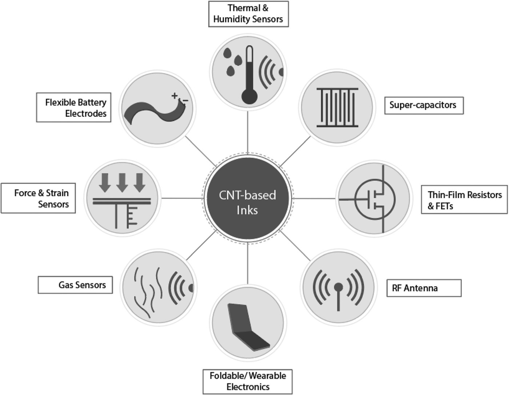
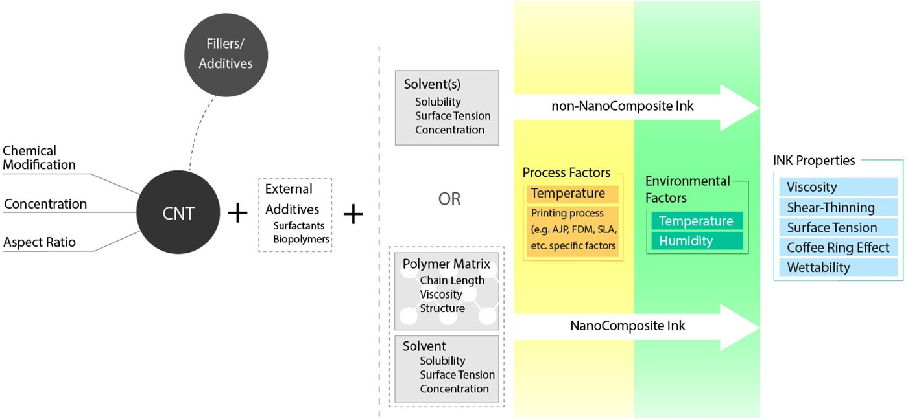
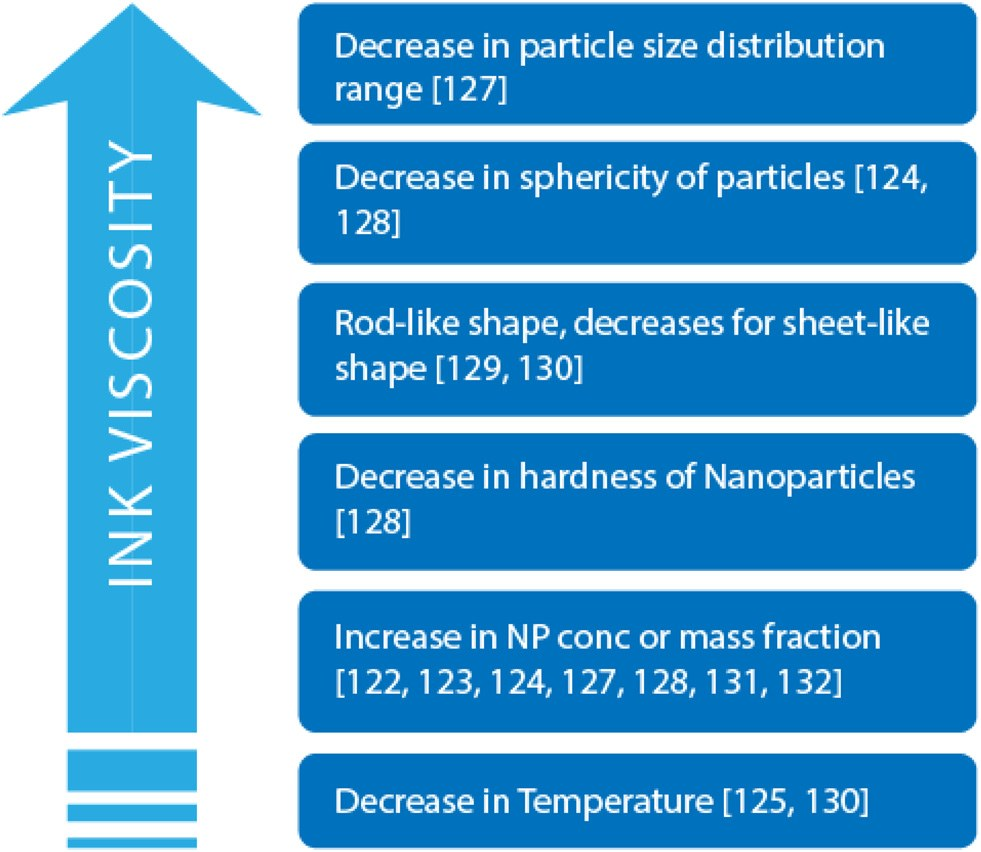
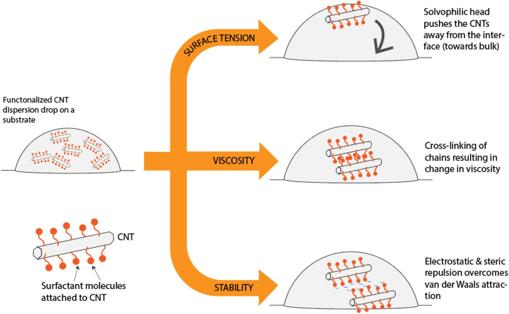
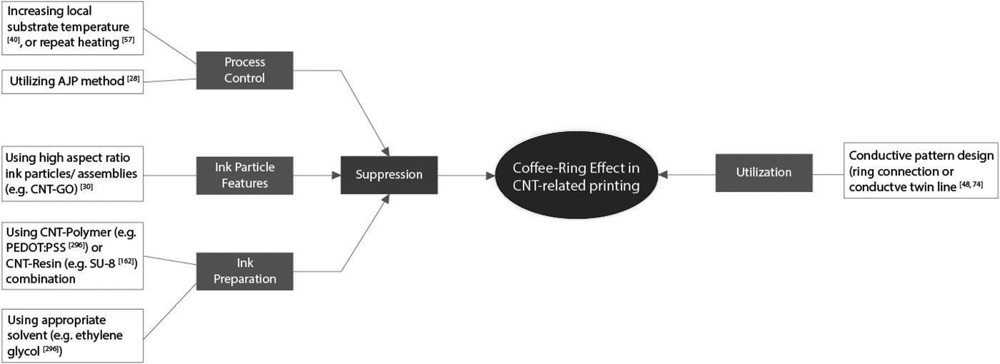

Project Details
Applications, Fluid Mechanics, and Colloidal Science of Carbon-Nanotube-Based 3D Printable Inks
- Category: Research (review article)
- Affiliation: University of Maryland, College Park
- Sponsor: SMIEL Lab
- PI: Dr. Siddhartha Das
- Collab: Beihan Zhao (1st author), Vishal S. Sivasankar, Shayandev Sinha (Intel), Abhijit Dasgupta
- Published: Sep 2022
A review of how carbon nanotubes are turned into printable inks: what they are used for, and the fluid mechanics and colloid science that decide whether an ink prints well.
Carbon nanotubes are tiny rolled-up sheets of carbon: stronger than steel by weight and excellent conductors of electricity and heat. That makes them attractive for printing sensors, circuits and electrodes. But to print them, you first have to turn them into an ink, and nanotubes would much rather clump together than stay evenly spread in a liquid. This review gathers what is known about making carbon-nanotube inks that print well, and focuses on the physics that most reviews skip: how the ink flows, wets, dries and holds together.
300+studies cited
37journal pages
2ink families: with and without a polymer carrier
4+printing methods: syringe, aerosol jet, inkjet, FDM, SLA
What nanotube inks are used for
The review first surveys what has been printed with nanotube inks: strain, gas, pH, temperature and humidity sensors; conductive patterns, transistors, capacitors and radio-frequency parts; batteries, heaters and lighting; and biomedical devices. It sorts the inks into two families:
- Nanocomposite inks, where nanotubes are suspended in a polymer that holds them in place once printed.
- Non-nanocomposite inks, where nanotubes (sometimes with other nanoparticles, such as graphene oxide) are simply dispersed in a liquid. Our group's printed humidity and temperature sensors use this kind of ink.

The physics of a printable ink
The core of the review is about what happens between the bottle and the finished line.

Leaving the nozzle
For inkjet printing, a single number based on the ink's viscosity, density and surface tension (the inverse of the Ohnesorge number, called Z) predicts whether clean droplets will form. Inks with Z roughly between 1 and 10 are generally printable. Too runny and the jet breaks into stray "satellite" droplets; too thick and it won't leave the nozzle.
Flowing, then stopping
Nanotube inks are almost always shear-thinning: they thin out when pushed and thicken at rest. That is ideal for printing. How strongly they do this depends on nanotube concentration, length, clumping and surface treatment, and the review collects how each of these shifts the ink's flow behaviour.

Why nanotubes clump. Nanotubes are long and thin, so the weak attraction between neighbouring molecules (van der Waals forces) adds up along their whole length and pulls them into bundles. Clumps block nozzles and print unevenly. The standard fixes are soap-like additives (surfactants), chemically decorating the nanotube surfaces with groups such as –OH or –COOH, or choosing solvents they mix well with.

Spreading and sticking
Surface tension controls both whether a droplet detaches cleanly from the nozzle and how it spreads on the surface it lands on. The review compiles how nanotube size, surface chemistry, solvent and temperature change the surface tension of nanotube-laden liquids, and notes that no single rule covers them all.
Drying: the coffee-ring problem
When a printed drop dries, liquid flows to its edge and carries particles with it, leaving a ring instead of an even film. The review lists the ways researchers have suppressed it (heating the substrate, mixing solvents, adding polymers, changing particle shape) and the few cases where they have exploited it, for example to print fine twin lines. Our own study of drying drops is on the 3D Deposits from Drying Drops page.

Sintering and curing
After printing, heat or other treatments drive off the solvent and additives and improve contact between particles, which raises conductivity. The review notes that only a few studies have looked at heat-assisted sintering of nanotube inks, and none with a design-based approach.
Open challenges
- Dispersion remains the central problem: finding additives that keep nanotubes apart, still print well, and leave a good deposit once dried.
- Trial and error. Almost every ink in the literature was tuned by trying recipes until one worked. The review proposes a design-first route: molecular simulations of how nanotubes and dispersants interact, fed into flow simulations of printing and drying, checked against direct nanoscale imaging of the ink.
- Many variables at once. The links between nanotube properties and ink behaviour are known mostly one variable at a time; changing several together is still hard to predict.
My role
I was a co-author on this review, which was led by Beihan Zhao in Prof. Siddhartha Das's group at the University of Maryland, with Vishal S. Sivasankar, Shayandev Sinha (Intel) and Prof. Abhijit Dasgupta.
Read the review: B. Zhao, V. S. Sivasankar, S. K. Subudhi, S. Sinha, A. Dasgupta and S. Das, “Applications, fluid mechanics, and colloidal science of carbon-nanotube-based 3D printable inks,” Nanoscale 14, 14858–14894 (2022). doi:10.1039/d1nr04912g
Figures 1–5 are the review's own schematics, reproduced with permission from the Royal Society of Chemistry; the diagram at the top was drawn for this site. A second review I co-authored, on soft magnetic films, is summarised on the Soft Magnetic Nanocomposite Films page.
Outcomes:
- Review published in the RSC journal Nanoscale on Sep 23, 2022.
Nanoscale 2022, 14, 14858–14894
DOI: 10.1039/d1nr04912g